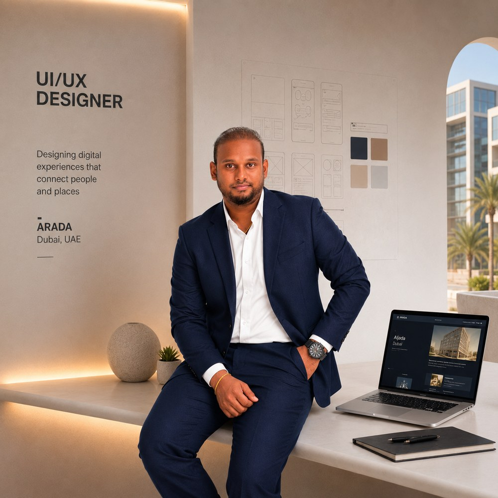
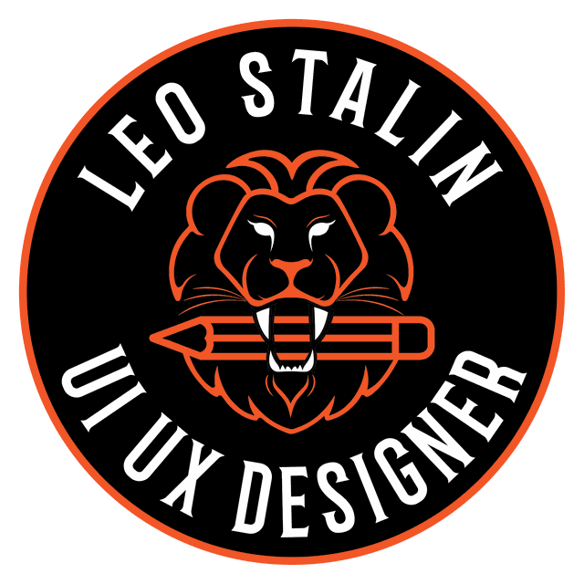

Hello, I'm
Leo Stalin
UI/UX Designer
Creative and detail-oriented UI/UX Designer with over 10 years of experience crafting user-centric web and mobile applications. Proven expertise in wireframing, prototyping, and creating design systems. Currently leading UI/UX initiatives at ARADA Developments, focusing on enhancing user experiences across real estate and customer platforms. Adept at balancing aesthetics with usability to deliver intuitive and high-performing interfaces.

About
Designing with intent, not decoration.
I'm a UI/UX designer based in Dubai with over ten years of experience building web and mobile products. I started in brand and print, moved into web, and have spent the last several years on complex product work — the kind where a single screen carries someone's payment plan or a sales team's entire pipeline.
Since 2022 I've led end-to-end design at Arada Developments, on both customer-facing platforms and the internal tools the business runs on: a customer portal for property owners, a broker app, a retail fit-out portal, a lead management app for sales teams, a commission module and an iPad app for unit handover.
I run the full process — research, user flows, wireframes, prototypes and testing — and I care most about the parts that usually get left until last: empty states, error recovery, and the copy inside a validation message.
Design Philosophy
Reduce friction, respect attention, and design systems that scale — not one-off screens.
Also
Motion graphics and AI-assisted explainer video — used to cut onboarding and training time on the products I design.
Experience
Where I've worked
-
UI/UX Designer
Apr 2022 — PresentArada Developments LLC · Dubai, UAE
- Lead end-to-end UI/UX across Arada's customer-facing platforms and internal tools — research, user flows, wireframes, prototypes and final UI. Projects include:
- my Arada — Customer Portal, a self-service portal for off-plan property owners.
- Arada Broker App, partner onboarding and services for the brokerages that sell Arada.
- RDD Portal, retail fit-out delivery shared by the Lease, RDD, Tenant and MEP teams.
- Lead Management App, one app for VPs, Sales Managers and Sales Executives.
- Sales Commission, a commission module inside the Connect App.
- Handover iPad App, bilingual unit handover signed on site.
- Produced AI-based explainer videos and step-by-step guides using Synthesia and Pictory, cutting training time by 40%.
-
Creative Designer
Sep 2016 — Mar 2022Univations Design Est · Dubai, UAE
- Delivered end-to-end creative work across branding, digital design and print for startups and established businesses.
- Developed brand identities including logo design, brand guidelines and visual systems.
- Designed website layouts and UI concepts, balancing aesthetics with usability.
- Produced brochures, company profiles, campaigns, packaging and exhibition graphics.
-
Web & Graphics Designer
Dec 2015 — Aug 2016PTL Solar FZ LLC · Dubai, UAE
- Designed WordPress-based websites and landing pages for solar product lines.
- Developed marketing collateral including banners, product flyers and digital graphics.
-
Junior Designer
2015 — 2016Ratna Softnet
- Supported design of print and web materials for small businesses and startups.
- Assisted in developing early wireframes and basic UI components for client websites.

The mark
A lion for the name, a pencil for the work.
One idea, reduced until there's nothing left to take away. It comes in two cuts — the full badge here, and an icon-only version that drops the lettering so it still reads in a browser tab.
Skills
A toolkit built for the whole journey.
UX & Product
End-to-end ownership from discovery through to specs the engineers build against.
UI & Tools
Figma is home. Enough front-end to hand over work that survives contact with the build.
Motion & Communication
Used at Arada to explain internal policy and onboard staff onto newly launched apps — cutting training time by 40%.
Languages: English, Tamil, Malayalam.
Selected Work
Featured Projects
Products I've designed end-to-end — from research to shipped UI.
Services
How I can help
UI Design
Pixel-perfect interfaces for web and mobile, built on a clear visual system.
UX Research
User flows, journey mapping and testing that ground decisions in behaviour.
Wireframing & Prototyping
Structure settled in Figma before a single pixel is styled.
Design Systems
Component libraries and tokens that keep a product consistent as it grows.
Mobile App Design
Native-feeling experiences for iOS & Android, designed for one-handed use.
Web & WordPress
Marketing sites and landing pages, designed and built on WordPress.
Motion & Explainer Video
Onboarding guides and product walkthroughs that reduce support load.
Brand & Print
Identity systems, guidelines and collateral — six years of agency practice.
Tell me what
you're building.
A product, a problem, or a role — I'd like to hear about it.
- leostalin11@gmail.com
- +971 52 398 4264
- Dubai, United Arab Emirates